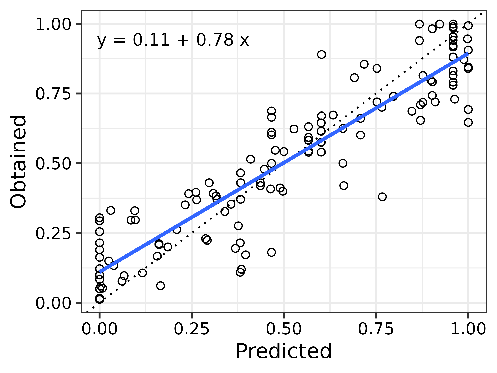

Generating SiGN Model Predictions from a Data Frame
Batch-generating SiGN model outputs using structured data
Source:vignettes/articles/batch-predict.Rmd
batch-predict.RmdIntroduction
In many experimental designs, model parameters vary across conditions
or subjects and are conveniently stored in tabular (i.e., spreadsheet)
form. This vignette demonstrates how to use a data frame—such as
subopt_avian—to generate SiGN model predictions in batch,
using parameter values specified in each row.
We will walk through the full process using the package’s included
subopt_avian data set as an example.
The subopt_avian Data Set
Dunn et al. (2024) compiled the results of an extensive collection of studies investigating suboptimal choice behaviour. This dataset is included in the SiGN package.
The full data set is available as subopt_full. For model
evaluation purposes, however, Dunn et al. (2024) focused on a curated
subset of studies involving pigeons and starlings—particularly pigeons,
which were the most extensively studied and yielded the most robust,
consistently replicated findings. This filtered dataset is provided as
subopt_avian.
Each row in subopt_avian represents a distinct study
condition. Many of its columns—specifically columns 9 through
24—correspond directly to the parameters expected by the
SiGN() model function (see the subopt_avian
documentation for column details).
library(SiGN)
# Display column names
names(subopt_avian)
#> [1] "row" "study" "year" "species"
#> [5] "exp" "condition" "n" "cp"
#> [9] "il_dur_a" "il_dur_b" "tl_dur_a1" "tl_dur_a2"
#> [13] "tl_dur_b1" "tl_dur_b2" "tl_p_a1" "tl_p_a2"
#> [17] "tl_p_b1" "tl_p_b2" "tr_p_a1" "tr_p_a2"
#> [21] "tr_p_b1" "tr_p_b2" "il_sched_a" "il_sched_b"
#> [25] "tl_sched_a1" "tl_sched_a2" "tl_sched_b1" "tl_sched_b2"
#> [29] "forced_exposure" "DOI" "ref" "data_version"One key column is $cp, which contains the observed
choice proportion reported for each condition. These values can be
directly compared to the SiGN model’s predicted proportions which we
shall generate using R code.
Generating a List of Model Parameters
To generate model predictions with the SiGN() function,
we first need to prepare a list of model parameters in the format it
expects.
These parameters are currently stored as columns in the
subopt_avian data frame (specifically, columns 9 through
24). However, they are not yet in list form, and some required
inputs—such as s_delta, beta_log, and
beta_toggle—are not included in the data set. While these
defaults are not parameters most users need to adjust, they must be
present for SiGN() to run properly.
Rather than constructing this list manually, we use the
choice_params() function. This function not only formats
the input correctly but also performs important validation checks to
ensure that all required arguments are present and well-formed.
To convert the relevant columns into a list of named arguments, we
use do.call() in combination with as.list().
This allows us to pass the data frame columns directly into
choice_params() as if we had typed them out
individually.
# Store Model Parameters
#-------------------------------------------------------------------------------
# Extract relevant parameter columns (cols 9–24 align with choice_params())
data_cols <- subopt_avian[9:24]
# Construct model input list
params <- do.call(choice_params, as.list(data_cols))The do.call() function dynamically calls
choice_params() by unpacking the data frame columns into
named arguments. In other words,
do.call(choice_params, as.list(data_cols)) transforms each
column into an argument like il_dur_a = ...,
il_dur_b = ..., and so on—matching exactly what
choice_params() expects. This only works because the column
names in subopt_avian[9:24] are aligned with the argument
names that choice_params() requires.
Generating the Predictions
Now that we have constructed a valid list of model parameters, we can
pass it to the SiGN() function to generate predictions.
This function returns a variety of outputs, but here we are specifically
interested in the predicted choice proportions.
# Generate model predictions
#-------------------------------------------------------------------------------
preds <- SiGN(params)The column preds$cp contains the model’s predicted
choice proportion for each row of subopt_avian[9:24]. These
can now be compared directly to the observed proportions stored in
subopt_avian$cp. For more information about the
SiGN() function and its outputs, see the Get Started article.
Visualising the Predictions
To help visualise the model’s performance, we will fit a simple linear regression to the observed versus predicted choice proportions. This gives a visual summary of their relationship and allows us to overlay both a regression line and a 1:1 reference line.
# Fit a linear model comparing observed vs predicted
reg <- lm(subopt_avian$cp ~ preds$cp)The plot below shows the correspondence between predicted and observed values. The dashed line represents perfect agreement (i.e., predicted equals observed), while the solid line shows the best-fitting linear regression.
# Plot of Results
#-------------------------------------------------------------------------------
# Format annotation for plot
reg_txt <- sprintf(
"y = %.2f + %.2f x\n",
reg$coefficients[1], reg$coefficients[2]
)
# Draw Plot
plot(preds$cp, subopt_avian$cp,
type = "n", las = 1,
xlim = c(0, 1), ylim = c(0, 1),
xlab = "Predicted",
ylab = "Obtained"
)
# Reference line
abline(a = 0, b = 1, lwd = 1, lty = 3, col = "grey")
# Points
points(preds$cp, subopt_avian$cp, las = 1, cex = 1)
# Regression line
abline(a = reg$coefficients[1], b = reg$coefficients[2], lwd = 2)
# Annotation
text(x = 0.2, y = 0.9, labels = reg_txt, cex = 1)
This plot provides a useful check on model performance: the closer the points lie to the dashed line, the better the model’s predictions match the observed data.
References
Dunn, R. M., Pisklak, J. M., McDevitt, M. A., & Spetch, M. L. (2024). Suboptimal choice: A review and quantification of the signal for good news (SiGN) model. Psychological Review. 131(1), 58-78. https://doi.org/10.1037/rev0000416